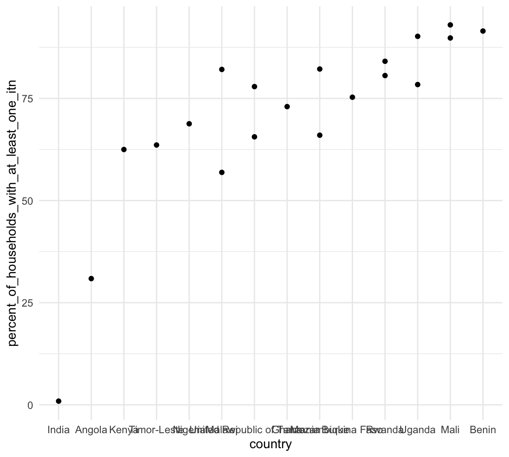
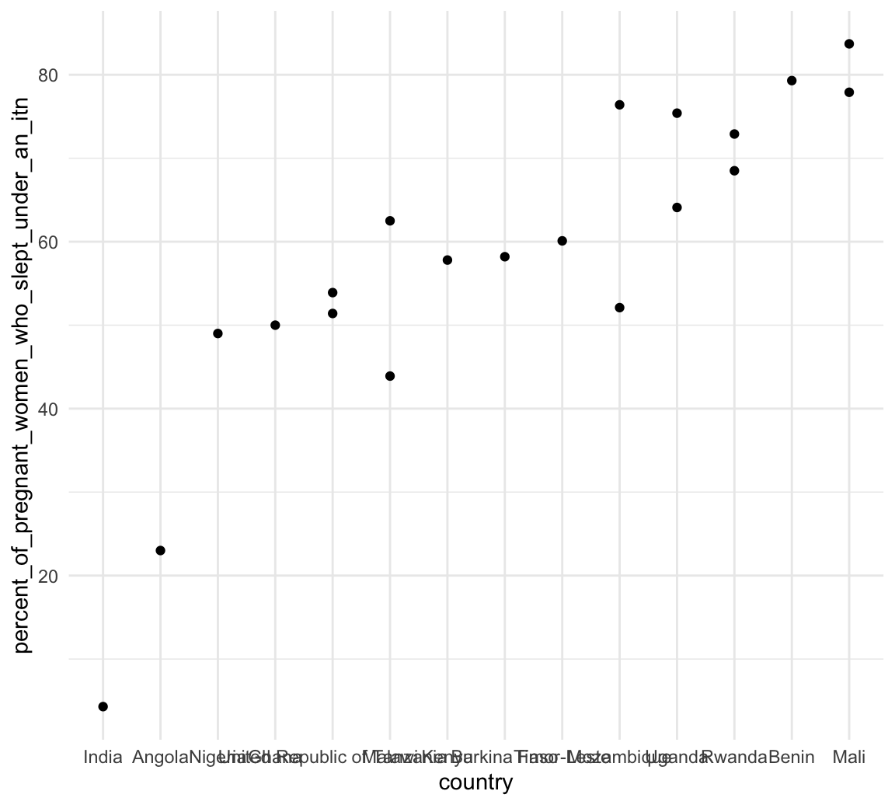

Commodities data is short and is not normalized relative to population. Use the household stats data instead
est_cases_commodities_df =
left_join(estimate_cases_deaths_df, commodities_df, by = c("country","year")) What is the population malaria prevelance and mortality?
ggplotly(ggplot(estimate_cases_deaths_df, aes(x = year, y = prevalence, color = country)) + geom_point() + geom_line())ggplotly(ggplot(estimate_cases_deaths_df, aes(x = year, y = mortality, color = country)) + geom_point() + geom_line() )household_stat_df =
read_excel(
"./data/household_survey_STAT.xls", range = "A4:T44", col_names = c("country", "source", "% of households with at least one ITN", "% of households with at least one ITN for every two persons who stayed in the household the previous night", "% of households with IRS in last 12 months", "% of households with at least one ITN and/or IRS in the past 12 months", "% of householdswith at least one ITN for every two persons and/or IRS in the past 12 months", "% of population with access to an ITN", "% of population who slept under an ITN last night", "% of ITNs that were used last night", "% of pregnant women who slept under an ITN", "% of pregnant women who took 3+ doses of IPTp", "% of children <5 years who slept under an ITN", "% of children <5 years with moderate or severe anaemia", "% of children <5 yearswith a positive RDT", "% of children <5 years with a positive microscopy blood smear", "% of children <5 years with fever in last 2 weeksfor whom advice or treatment was sought", "% of children <5 years with fever in last 2 weekswho had blood taken from a finger or heel for testing", "% of children <5 years with fever in last 2 weeks who took antimalarial drugs", "% of children <5 years with fever in last 2 weeks who took an ACT among those who received any antimalarial")) %>%
janitor::clean_names() %>%
filter(
country %in% countries
) %>%
pivot_longer(
percent_of_households_with_at_least_one_itn:percent_of_children_5_years_with_fever_in_last_2_weeks_who_took_an_act_among_those_who_received_any_antimalarial,
names_to = "preventative_measure",
values_to = "percentage"
) %>%
drop_na(percentage) %>%
mutate(
percentage = as.numeric(percentage),
year = substr(source, 1, 4),
year = as.integer(year),
year_end = substr(source, 6, 7),
year_end = case_when(
str_detect(year_end, "[MDA][IH]") == TRUE ~ NA_character_,
str_detect(year_end, "[MDA][IH]") == FALSE ~ year_end
),
year_end = str_c("20", year_end),
year_end = as.integer(year_end)
) %>%
select(-source)itn_df =
household_stat_df %>%
filter(preventative_measure %in% c("percent_of_households_with_at_least_one_itn",
"percent_of_pregnant_women_who_slept_under_an_itn",
"percent_of_children_5_years_who_slept_under_an_itn")) %>%
pivot_wider(
names_from = preventative_measure,
values_from = percentage
) %>%
right_join(estimate_cases_deaths_df, by = c("country", "year"))Does a household having an ITN improve prevalence/mortality of malaria?
household_stat_df %>%
filter(preventative_measure == "percent_of_households_with_at_least_one_itn") %>%
select(-preventative_measure) %>%
rename(
percent_of_households_with_at_least_one_itn = percentage
) %>%
mutate(
country = as.factor(country),
country = fct_reorder(country, percent_of_households_with_at_least_one_itn)
) %>%
ggplot(aes(x = country, y = percent_of_households_with_at_least_one_itn)) + geom_point() 
Does a pregnant woman sleeping under an ITN improve prevalence/mortality of malaria?
household_stat_df %>%
filter(preventative_measure == "percent_of_pregnant_women_who_slept_under_an_itn") %>%
select(-preventative_measure) %>%
rename(
percent_of_pregnant_women_who_slept_under_an_itn = percentage
) %>%
mutate(
country = as.factor(country),
country = fct_reorder(country, percent_of_pregnant_women_who_slept_under_an_itn)
) %>%
ggplot(aes(x = country, y = percent_of_pregnant_women_who_slept_under_an_itn)) + geom_point() 
Does a child under 5 sleeping under an ITN improve prevalence/mortality of malaria?
itn_household_df =
household_stat_df %>%
filter(preventative_measure %in% c("percent_of_households_with_at_least_one_itn",
"percent_of_pregnant_women_who_slept_under_an_itn",
"percent_of_children_5_years_who_slept_under_an_itn")) %>%
select(-preventative_measure) %>%
rename(
percent_of_households_with_at_least_one_itn = percentage
) %>%
right_join(est_cases_commodities_df, by = "country")